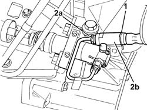
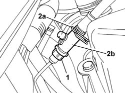

1820B58 CLUTCH HYDRAULIC CIRCUIT VIBRATION DAMPER - R+R
- Path
- Procedures > 18 CLUTCH UNIT > 1820 CLUTCH RELEASE CONTROLS > 1820B HYDRAULIC CLUTCH SYSTEM > 1820B58 CLUTCH HYDRAULIC CIRCUIT VIBRATION DAMPER - R+R
- Kind
- repair procedure (removal / refitting; the operation number is the code)
- Applies to
- engines: 2.0 JTD 8V, 2.3 JTD 16V; all production periods
- Interactive page
- https://sloeber94.github.io/elrnDB-fDct/en/#/244001018
Applies to: engines: 2.0 JTD 8V; all production periods
 Removing
Removing
 Refitting
Refitting- Position the vehicle on a lift.
- Remove the protective cap from the bleed valve on one of the front brake calipers.
- Connect the recovery device (pipe and reservoir) to the brake caliper bleed valve.
- Operate the brake pedal until the brake/clutch reservoir is drained.
Op. 7055B54 UNDER-ENGINE GUARD - R R
1. Undo the connector and disconnect the flexible pipe from the master cylinder (pump) pipe.
- Lift up the spring (2a) and remove the vibration damper (2b).

Applies to: engines: 2.0 JTD 8V; all production periods
Refitting
Removing- Fit the vibration damper and connect the fastening spring.
- Tighten the connector for the master cylinder flexible pipe.
Applies to: engines: 2.3 JTD 16V; all production periods
Removing
Refitting- Position the vehicle on a lift.
- Remove the protective cap from the bleed valve on one of the front brake calipers.
- Connect the recovery device (pipe and reservoir) to the brake caliper bleed valve.
- Operate the brake pedal until the brake/clutch reservoir is drained.
See in Op. 1048A50
1. Lift up the spring and disconnect the flexible pipe from the master cylinder (pump) pipe.
2. Undo the connector (2a) and remove the vibration damper (2b).

Applies to: engines: 2.3 JTD 16V; all production periods
Refitting
Removing- Fit the vibration damper, tighten the connector and position the fastening spring.
See in Op. 1048A50